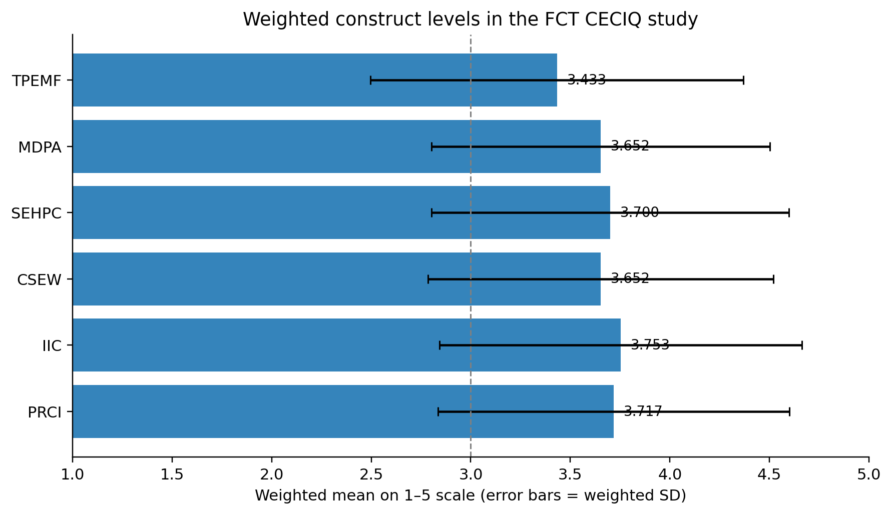
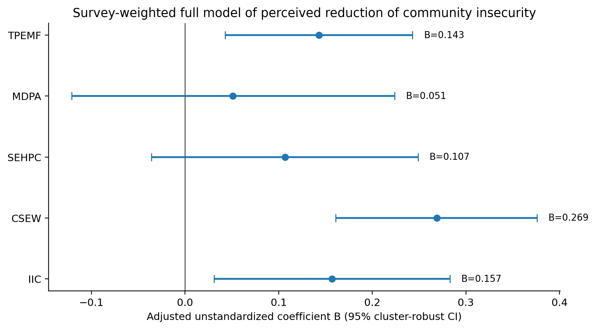

Production-approved public reading copy. DOI pending registration. This page is not a substitute for any later Crossref record.
Church Engagement and Perceived Reduction of Community Insecurity in Abuja, Nigeria: Survey-Weighted Evidence Across the Six FCT Area Councils
Abstract
Background: Religious institutions are socially influential in Nigeria, but their public-security contribution should be measured as specific practices rather than presumed from visibility or doctrine. Objective: To estimate the relationship between five dimensions of Church engagement and perceived reduction of community insecurity (PRCI) across the Federal Capital Territory. Methods: A stratified multistage household survey generated 586 response records from 642 field contacts in 24 clusters. The CECIQ measured TPEMF, MDPA, SEHPC, CSEW, IIC and PRCI. Weighted Spearman correlations and a survey-weighted, cluster-robust multiple regression with prespecified covariates and Holm correction were used. Results: All five Church-engagement constructs correlated positively with PRCI (weighted ρ=.376–.450). The full model used 366 complete cases and explained 45.3% of weighted PRCI variance. TPEMF (B=.143, 95% CI [.043,.243], Holm p=.027), CSEW (B=.269, [.161,.376], p<.001) and IIC (B=.157, [.031,.283], p=.050) retained positive adjusted relationships; MDPA and SEHPC did not retain independent support after correction. CSEW was the strongest distinct predictor (standardized β=.284; ΔR²=.059). Conclusion: The evidence supports a real but bounded complementary role for Church engagement. The most defensible pattern combines peace-ethical formation, verified and lawful community-safety practice, and sustained cross-boundary collaboration. Cross-sectional perception data do not establish a causal fall in recorded crime.
1. Introduction
Security in Nigeria is experienced not only as attacks on state institutions but as fear, kidnapping risk, livelihood disruption, weak trust, displacement and reduced confidence in public response. The human-security tradition is therefore useful because it keeps the constitutional responsibility of the state intact while asking how non-state institutions may complement public protection through prevention, care, information, mediation and social coordination (United Nations Development Programme [UNDP], 1994; United Nations General Assembly, 2012). In 2025 Nigeria remained among the countries most affected by terrorism, while recent FCT reporting documented violence against civilians, riots, battles and kidnapping-related harm across the Territory (European Union Agency for Asylum [EUAA], 2026; Institute for Economics & Peace [IEP], 2026).
The Church occupies an unusual position in that environment. It has no lawful monopoly of force, yet congregations and Christian institutions possess moral platforms, dense social networks, buildings, volunteers, welfare channels and relationships with other faith communities and public institutions. Those assets can support peace education, emergency assistance, early warning and cooperation; they can also reproduce exclusion, unverified narratives, partisan advocacy or short-lived crisis responses. The relevant empirical question is therefore not whether religion is 'important' but which observable practices are sufficiently coherent to be associated with residents' reports of improved safety, response, cohesion and resilience.
This study operationalized that question through five domains: theological peace education and moral formation (TPEMF); mediation, dialogue and public advocacy (MDPA); socioeconomic empowerment, humanitarian relief and psychosocial care (SEHPC); community-security engagement and early-warning support (CSEW); and institutional and interfaith collaboration (IIC). Human Security supplied the people-centred outcome logic, Conflict Transformation clarified relational and institutional mechanisms, Social Capital explained bonding/bridging/linking resources, and practical theology provided a discipline for moving from empirical description to responsible Christian judgement (Coleman, 1988; Lederach, 1997; Osmer, 2008).
1.1 Aim and research questions
The aim was to estimate how the five Church-engagement dimensions related to PRCI after accounting for their co-occurrence and important contextual differences. Five questions asked whether TPEMF, MDPA, SEHPC, CSEW and IIC were positively related to PRCI. The corresponding null hypotheses were decided from each coefficient in the prespecified full model rather than from isolated regressions.
2. Materials and Methods
2.1 Design, setting and sampling
The parent doctoral study used a stratified multistage household survey across all six Area Councils of the Federal Capital Territory (Abaji, AMAC, Bwari, Gwagwalada, Kuje and Kwali). Area Council was the explicit stratum and four communities or enumeration-area equivalents were selected within each council, giving 24 field clusters. Within clusters, households were selected systematically from fresh or verified listings, and one eligible adult was selected within each participating household using a Kish-style random procedure. Eligibility required age 18 years or older and at least 12 months of residence. The sample was not restricted to Christians because the public consequences of Church action were intended to be judged by residents across faith positions and levels of Church contact.
Cochran's large-population formula produced an initial n=385 at 95% confidence and 5% error using p=.50. A design effect of 1.50 and 10% allowance for ineligibility/nonresponse increased the target to 642. The resulting design deliberately protected coverage of both metropolitan and peripheral FCT contexts rather than treating AMAC as synonymous with Abuja (Cochran, 1977; Kish, 1965).
2.2 Measurement, validation and ethics
The Church Engagement and Community Insecurity Questionnaire (CECIQ) measured five Church-engagement domains with five items each: theological peace education and moral formation (TPEMF), mediation/dialogue/public advocacy (MDPA), socioeconomic empowerment/humanitarian relief/psychosocial care (SEHPC), community-security engagement/early-warning support (CSEW), and institutional/interfaith collaboration (IIC). Perceived reduction of community insecurity (PRCI) was measured with seven items covering everyday safety, fear and tension, cohesion, access to help, incident response, protection of vulnerable persons and recovery/resilience. Items used a 1–5 agreement scale with separate 0 = not observed/not applicable and 9 = prefer not to answer codes; 0 and 9 were excluded from scale means. Three optional open-ended questions captured helpful actions, weak or unsafe practices and priority improvements.
Instrument development included expert review by a seven-member multidisciplinary panel, cognitive pretesting with 12 adults, and a separate 60-person pilot in communities excluded from the main study. The pilot showed McDonald’s omega values of .79–.89 and Cronbach’s alpha values of .78–.88 across the six scales and prompted targeted wording/translation revisions, including clearer distinction between lawful early-warning reporting and rumour circulation. In the main data, alpha ranged from .796 to .875 and omega from .798 to .879.
The study was designed to avoid collection of operational intelligence or identifiable victim information. Fieldwork proceeded only after written institutional clearance and required permissions. Consent was documented before participation; research assistants were trained in neutral administration, distress recognition, confidentiality, referral and safe handling of security-sensitive material. Exact household locations were not retained in the analytical dataset.
2.3 Statistical analysis
The field target was 642 household contacts. The analytical file contained 586 questionnaires (578 complete and eight partial), an operational response rate of 92.4% after exclusion of eight ineligible contacts. Scale-specific valid samples ranged from 524 to 569; the survey-weighted simultaneous model used 366 respondents with all required scales and covariates across the 24 clusters. Weighted Spearman correlations described bivariate relationships. The primary inferential model regressed PRCI on all five Church-engagement scores simultaneously and adjusted for Area Council, years of residence, age, sex, Church contact and insecurity exposure. Supplied final weights and cluster-robust standard errors were used, and the family of five prespecified hypotheses was controlled with Holm’s sequential adjustment. An equal-weight model was retained as a sensitivity analysis.
Table 1. Fieldwork disposition and response yield
Note. Response-rate denominator excluded the eight contacts recorded as not eligible.
3. Results
3.1 Respondent profile and construct quality
All six Area Councils contributed response records (Abaji 94, AMAC 97, Bwari 97, Gwagwalada 105, Kuje 100, Kwali 93). Women constituted 52.6% of the achieved sample; 48.8% identified as Christian and 42.8% as Muslim. Direct personal insecurity exposure was reported by 18.8% and indirect exposure through a close person or household by 43.5%. Weekly or more frequent Church contact was reported by 41.6%, while 29.0% reported no Church contact. This distribution is important because the Church was not evaluated only by institutional insiders.
Table 2. Construct descriptives and internal consistency
Note. Weighted descriptives use the supplied final weight. Reliability was estimated on listwise-complete scale items.

Figure 1. Weighted mean scores for the five Church-engagement constructs and PRCI.
3.2 Bivariate relationships
Every Church-engagement construct showed a positive moderate weighted relationship with PRCI. IIC had the largest bivariate coefficient (ρ=.450), followed closely by CSEW (ρ=.445), TPEMF (ρ=.410), MDPA (ρ=.394) and SEHPC (ρ=.376). Predictor intercorrelations ranged from .276 to .446, which supported the conceptual view that the domains were connected but not interchangeable.
Table 3. Weighted Spearman relationships with PRCI
3.3 Survey-weighted full model
The simultaneous model included 366 complete cases across all 24 clusters, explained 45.3% of weighted PRCI variance (adjusted R²=.408) and showed no problematic multicollinearity (VIF 1.36–1.56). The inferential pattern was selective rather than uniformly favorable: TPEMF, CSEW and IIC retained positive relationships after Holm correction; MDPA and SEHPC did not. This distinction matters because Church practices often co-occur, and isolated models would attribute shared institutional activity to whichever predictor was entered alone.
Table 4. Survey-weighted, cluster-robust regression of PRCI
Note. n=366; 24 clusters; covariates: Area Council, residence, age, sex, Church contact and insecurity exposure. Holm-adjusted p values govern the five prespecified hypothesis decisions.

Figure 2. Adjusted CECIQ construct coefficients with 95% cluster-robust confidence intervals.
3.4 Sensitivity and embedded open-ended evidence
The equal-weight sensitivity model produced positive Holm-adjusted results for all five constructs. TPEMF, CSEW and IIC therefore showed the most stable direction across weighting assumptions, whereas the MDPA and SEHPC decisions were sensitive to the supplied council weighting. The embedded open-ended fields added a practical layer without being treated as an independent qualitative sample. Because multiple codes could be assigned, percentages do not sum to 100.
Table 5. Structured open-ended categories across H1–H3
Note. Multiple coding was permitted. The analytical workbook contains repeated structured text patterns, so categories are reported as coded evidence rather than as unique verbatim quotations.
4. Discussion
The central finding is not that 'the Church reduces insecurity' in a general or causal sense. The defensible result is narrower: residents who reported stronger observable Church engagement also tended to report stronger community-level improvement, and three domains—formation, community-safety/early-warning practice and institutional/interfaith collaboration—retained distinct relationships when modeled together. That pattern fits the Human Security view that safety is produced through interacting capacities rather than through force alone, while preserving the constitutional primacy of the state (UNDP, 1994; Federal Republic of Nigeria, Office of the National Security Adviser, 2019).
CSEW's leading coefficient gives the study an operational centre. Verified warnings, lawful reporting channels, clear risk communication, preparedness and safeguarding translate moral concern into time-sensitive action. The result is consistent with ECOWAS prevention logic and with scholarship that places religious actors in early warning, mediation and good offices while rejecting vigilantism or parallel coercive authority. IIC's independent relationship adds a relational explanation: local congregational capacity becomes more useful when it is bridged across faith communities and linked to public, civil-society and professional institutions (Coleman, 1988; Lederach, 1997).
TPEMF's adjusted relationship shows that theological formation should not be dismissed as intangible. The measured items concerned human dignity, nonviolence, responsible interpretation, lawful citizenship, protection of vulnerable persons and resistance to inflammatory narratives. The weakest TPEMF item was rumour verification, which identifies a concrete gap between pulpit-level moral language and everyday information behavior. In practical-theological terms, formation has public credibility when it is embodied in truthful conduct rather than left as general exhortation (Osmer, 2008).
The non-distinct weighted coefficients for MDPA and SEHPC should not be misread as evidence that mediation or material care are unimportant. Their positive bivariate relationships, significant equal-weight sensitivity coefficients and strong item-level visibility indicate substantial activity; the primary model says only that the dataset did not isolate additional weighted variance after the other Church domains and covariates were entered. This is precisely why the prespecified simultaneous model was preferable to a sequence of separate significance tests.
4.1 Implications for Church and public practice
- Treat early warning as verified, lawful communication and referral—not public accusation, vigilantism or unverified social-media circulation.
- Build denominational, interfaith and public-agency protocols with defined roles, safeguarding, feedback and periodic review rather than one-off crisis meetings.
- Move peace teaching from generic appeals to concrete formation in dignity, nonviolence, responsible Scripture use, lawful citizenship and rumour resistance.
- Professionalize relief, psychosocial care and referral through transparent needs-based criteria and links to qualified services.
- Retain data on reach, continuity, inclusion and outcomes so that future evaluation can compare perceptions with incident, service and longitudinal records.
4.2 Limitations
The study was cross-sectional, measured both exposure and outcome through respondent reports, and used PRCI rather than official crime statistics. Causal direction cannot be established, and common-method or social-desirability effects remain possible despite anonymous, behaviorally worded items and a 'not observed' option. The full-model complete-case n was smaller than the total response file, and the weighting sensitivity of MDPA/SEHPC requires caution. Open-ended fields were coded from structured response patterns and are therefore used as category-level corroboration rather than rich interview evidence. Generalization beyond the FCT requires new sampling.
5. Conclusion
Across six FCT Area Councils, Church engagement was positively associated with perceived improvement in community security, but the evidence was not evenly distributed across practices. The strongest and most stable public contribution combined accurate community-safety action, cross-boundary collaboration and moral formation. This configuration offers a practical theological model of complementarity: the Church contributes through truth, care, networks and lawful civic action while the state retains responsibility for investigation, coercion and public security. Future research should use longitudinal designs, independent incident/service data and programme-level exposure measures to test whether these associations translate into verified change over time.
Declarations
References
Afrobarometer. (2025, May 29). Kidnapping and insecurity weigh heavily on Nigerians, Afrobarometer survey finds. https://www.afrobarometer.org/articles/kidnapping-and-insecurity-weigh-heavily-on-nigerians-afrobarometer-survey-finds/
American Association for Public Opinion Research. (2023). Standard definitions: Final dispositions of case codes and outcome rates for surveys (10th ed.). https://aapor.org/wp-content/uploads/2024/03/Standards-Definitions-10th-edition.pdf
Cochran, W. G. (1977). Sampling techniques (3rd ed.). Wiley.
Coleman, J. S. (1988). Social capital in the creation of human capital. American Journal of Sociology, 94(Suppl.), S95–S120. https://doi.org/10.1086/228943
European Union Agency for Asylum. (2026). COI report—Nigeria: Security situation. Publications Office of the European Union. https://www.euaa.europa.eu/nigeria-security-situation/212-fct-abuja
Federal Republic of Nigeria, Office of the National Security Adviser. (2019). National security strategy 2019. https://nctc.gov.ng/ova_doc/6456/
Institute for Economics & Peace. (2026). Global Terrorism Index 2026: Measuring the impact of terrorism. https://www.visionofhumanity.org/wp-content/uploads/2026/03/Global-Terrorism-Index-2026-Report.pdf
Kish, L. (1965). Survey sampling. Wiley.
Lederach, J. P. (1997). Building peace: Sustainable reconciliation in divided societies. United States Institute of Peace Press.
Mbaegbu, R. (2024). Nigerians view religious leaders as more trustworthy, less corrupt than public institutions (Afrobarometer Dispatch No. 900). https://www.afrobarometer.org/wp-content/uploads/2024/11/AD900-Nigerians-see-religious-leaders-as-more-trustworthy-than-public-institutions-Afrobarometer-14nov24.pdf
Osmer, R. R. (2008). Practical theology: An introduction. Eerdmans.
Polit, D. F., Beck, C. T., & Owen, S. V. (2007). Is the CVI an acceptable indicator of content validity? Appraisal and recommendations. Research in Nursing & Health, 30(4), 459–467. https://doi.org/10.1002/nur.20199
United Nations Development Programme. (1994). Human Development Report 1994: New dimensions of human security. Oxford University Press. https://hdr.undp.org/content/human-development-report-1994
United Nations General Assembly. (2012). Follow-up to paragraph 143 on human security of the 2005 World Summit Outcome (Resolution 66/290). https://undocs.org/A/RES/66/290
Wasserstein, R. L., & Lazar, N. A. (2016). The ASA statement on p-values: Context, process, and purpose. The American Statistician, 70(2), 129–133. https://doi.org/10.1080/00031305.2016.1154108
Economic Community of West African States. (2008). ECOWAS Conflict Prevention Framework. https://www.ecowas.int/wp-content/uploads/2024/08/ECOWAS-CONFLICT-PREVENTION-FRAMEWORK-new.pdf
Economic Community of West African States. (2020). ECOWAS Dialogue and Mediation Handbook. https://ecowas.int/wp-content/uploads/2022/08/Dialogue-and-Mediation-Handbook_en_PDF.pdf
Haynes, J. (2009). Conflict, conflict resolution and peace-building: The role of religion in Mozambique, Nigeria and Cambodia. Commonwealth & Comparative Politics, 47(1), 52–75. https://doi.org/10.1080/14662040802659033
Nigeria Police Act, 2020, Act No. 2 of 2020. https://placng.org/i/wp-content/uploads/2020/09/Police-Act-2020.pdf
Ordu, G. E.-O., & Nnam, M. U. (2017). Community policing in Nigeria: A critical analysis of current developments. International Journal of Criminal Justice Sciences, 12(1), 83–97. https://doi.org/10.5281/zenodo.345716
Abu-Nimer, M. (2001). Conflict resolution, culture, and religion: Toward a training model of interreligious peacebuilding. Journal of Peace Research, 38(6), 685–704. https://doi.org/10.1177/0022343301038006003
Bouta, T., Kadayifci-Orellana, S. A., & Abu-Nimer, M. (2005). Faith-based peace-building: Mapping and analysis of Christian, Muslim and multi-faith actors. Clingendael Institute.
Clarke, G. (2006). Faith matters: Faith-based organisations, civil society and international development. Journal of International Development, 18(6), 835–848. https://doi.org/10.1002/jid.1317
Recommended citation: Okoriko, S. D., Nnaji, C. O., & Kehinde, A. (2026). Church Engagement and Perceived Reduction of Community Insecurity in Abuja, Nigeria: Survey-Weighted Evidence Across the Six FCT Area Councils. CHIATECH JOURNAL, 1(1), e005. DOI pending registration.
Table 1
| Article | Volume/Issue | Publication | ISSN | DOI |
|---|---|---|---|---|
| e005 | 1(1) | Pioneer Issue · July 2026 | Pending assignment | Pending registration |
Table 2
| Fieldwork disposition | n | % |
|---|---|---|
| Complete | 578 | 90.0 |
| Partial | 8 | 1.2 |
| Non-contact | 17 | 2.6 |
| Invalid selection/consent | 4 | 0.6 |
| Refusal | 20 | 3.1 |
| Not eligible | 8 | 1.2 |
| Security suspension | 4 | 0.6 |
| Language/access barrier | 3 | 0.5 |
| Operational response rate | 586 | 92.4 |
Table 3
| Scale | Valid n | Weighted M | Weighted SD | α | ω |
|---|---|---|---|---|---|
| TPEMF | 569 | 3.433 | 0.937 | .832 | .833 |
| MDPA | 524 | 3.652 | 0.850 | .796 | .798 |
| SEHPC | 538 | 3.700 | 0.897 | .828 | .835 |
| CSEW | 532 | 3.652 | 0.868 | .800 | .803 |
| IIC | 524 | 3.753 | 0.909 | .858 | .860 |
| PRCI | 542 | 3.717 | 0.882 | .875 | .879 |
Table 4
| Predictor | Weighted ρ with PRCI | Pairwise n |
|---|---|---|
| TPEMF | .410 | 527 |
| MDPA | .394 | 485 |
| SEHPC | .376 | 502 |
| CSEW | .445 | 503 |
| IIC | .450 | 492 |
Table 5
| Predictor | B | Robust SE | 95% CI | Std. β | Holm p | ΔR² | Decision |
|---|---|---|---|---|---|---|---|
| TPEMF | .143 | .048 | [.043, .243] | .169 | .027 | .020 | Supported |
| MDPA | .051 | .083 | [-.121, .224] | .052 | .545 | .002 | Not distinct |
| SEHPC | .107 | .069 | [-.036, .249] | .120 | .272 | .011 | Not distinct |
| CSEW | .269 | .052 | [.161, .376] | .284 | <.001 | .059 | Supported |
| IIC | .157 | .061 | [.031, .283] | .174 | .050 | .020 | Supported |
Table 6
| Open-ended category | Respondent references | % of 586 |
|---|---|---|
| Professional training/referral improvement | 270 | 46.1 |
| Relief, livelihood and psychosocial support | 203 | 34.6 |
| Transparency and inclusion concern | 191 | 32.6 |
| Verified warning and lawful reporting | 178 | 30.4 |
| Weak continuity/follow-up | 157 | 26.8 |
| Interfaith/institutional collaboration | 147 | 25.1 |
| Mediation and sustained dialogue | 138 | 23.5 |
| Peace teaching and rumour control | 135 | 23.0 |
Table 7
| Declaration | Statement |
|---|---|
| Ethics and consent | Fieldwork proceeded only after written institutional clearance and required permissions. Adult participation was voluntary; informed consent was documented; the questionnaire was anonymous and did not retain exact household locations. |
| Funding | No external grant funding is declared for this study. |
| Competing interests | The authors declare no competing interests relevant to the study. |
| Data availability | The de-identified analytical dataset, codebook and quality-assurance records are held by the research team. Access may be considered for legitimate scholarly verification subject to ethics, confidentiality and data-protection requirements. |
| Author contributions | S.D.O.: conceptualization, investigation, data curation, formal analysis and original drafting. C.O.N.: supervision, methodology review, interpretation and critical revision. A.K.: co-supervision, theological interpretation and critical revision. All authors approved the submitted version and accept responsibility for the work. |
| AI-assisted editorial disclosure | AI-assisted tools were used only for editorial organization, language refinement and document production. They were not treated as authors or evidence. Numerical findings were retained from the verified study dataset and analysis records; human authors and editors remain responsible for claims, citations and interpretation. |
| Related publications / dataset transparency | This article (e005) is part of a coordinated publication series derived from the same doctoral FCT CECIQ study. It reports the distinct focus of the comparative five-domain survey-weighted model of Church engagement and PRCI. Companion articles use the same participant dataset for different prespecified or clearly delimited questions. Shared methods and sample descriptions are disclosed to prevent the appearance of independent replication. |
| Copyright and licence | © 2026 The authors. Published by CHIA TECH SOLUTIONS AND RESOURCES LIMITED. Planned version-of-record licence: Creative Commons Attribution 4.0 International (CC BY 4.0). |